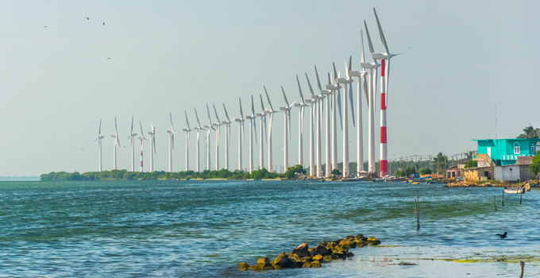
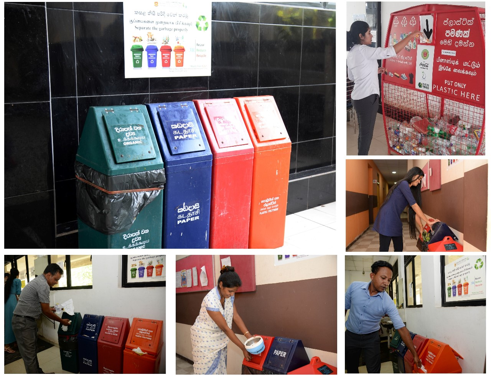
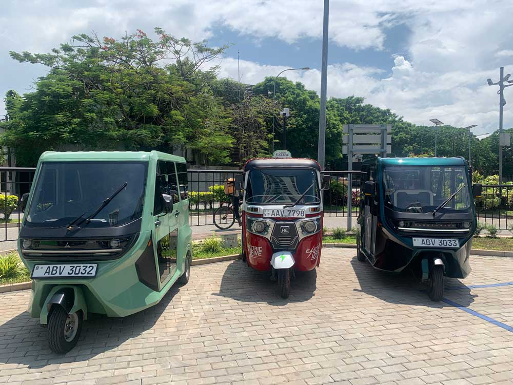
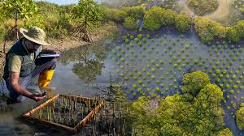

Welcome to Panda EP's Environmental Issues section, where we delve into the pressing challenges facing our planet today. In this section, we explore the critical environmental issues threatening our ecosystems, wildlife, and human health. From air and water pollution to plastic pollution, deforestation, and climate change, we provide comprehensive information on each issue, including their causes, impacts, and solutions. By understanding these challenges, we can work together to implement positive change and create a more sustainable future for generations to come. Join us as we explore the complexities of these environmental issues and discover how we can make a difference.
Featured Solutions
- Renewable Energy

- Waste Reduction

- Sustainable Transportation

- Eco-Friendly Products
- Conservation Efforts

Information on each solution
Renewable Energy
Renewable energy is a sustainable and environmentally friendly alternative to traditional fossil fuels. Unlike fossil fuels, which emit greenhouse gases and contribute to climate change, renewable energy sources such as solar, wind, hydro, and geothermal power produce minimal or no greenhouse gas emissions during electricity generation.
- Solar Energy
- - Harnessing the power of sunlight through photovoltaic panels to generate electricity.
- - Solar energy is abundant, clean, and renewable, making it an attractive alternative to fossil fuels.
- - Solar panels can be installed on rooftops, in solar farms, and in remote areas to provide electricity to communities.
- Wind Energy
- - Utilizing wind turbines to convert the kinetic energy of wind into electricity.
- - Wind energy is a clean and abundant resource, with the potential to power homes, businesses, and entire communities.
- - Wind farms can be located onshore or offshore, taking advantage of areas with strong and consistent wind patterns.
- Hydroelectric Energy
- - Generating electricity by harnessing the energy of flowing water in rivers and dams.
- - Hydroelectric power is a reliable and renewable energy source that produces minimal greenhouse gas emissions.
- - Large-scale hydroelectric projects can provide significant amounts of electricity to meet the needs of urban and rural areas.
- Geothermal Energy
- - Tapping into the Earth's heat to produce steam and generate electricity.
- - Geothermal energy is a reliable and renewable resource that is available 24/7, regardless of weather conditions.
- - Geothermal power plants can be located near geologically active areas, where hot rocks and water reservoirs are close to the Earth's surface.
By transitioning to renewable energy sources, we can reduce our carbon footprint, mitigate the impacts of climate change, and create a more sustainable and resilient energy future for all.
Waste Reduction
Waste reduction is a crucial step towards achieving a more sustainable and environmentally friendly society. By reducing the amount of waste we produce and implementing efficient waste management practices, we can minimize environmental pollution, conserve natural resources, and protect ecosystems.
Key Strategies for Waste Reduction
Reduce
- Minimize the consumption of single-use products and packaging.
Choose products with minimal or recyclable packaging.
- Opt for durable and long-lasting items instead of disposable ones.
Reuse
- Find creative ways to reuse and repurpose items instead of throwing them away.
- Donate or sell unwanted items to others who can use them.
- Use refillable containers and bottles for beverages and household products.
Recycle
- Separate recyclable materials such as paper, glass, plastic, and metal for recycling.
- Follow local recycling guidelines and practices to ensure materials are properly sorted and processed.
- Support products made from recycled materials to close the recycling loop.
Compost
- Compost organic waste such as food scraps, yard trimmings, and paper products to create nutrient-rich soil.
- Use compost to enrich garden soil and reduce the need for chemical fertilizers.
- Encourage community composting initiatives and composting at home.
Benefits of Waste Reduction
- Reduces the consumption of natural resources and energy used in production.
- Minimizes pollution of land, air, and waterways associated with waste disposal.
- Saves money by reducing the need for purchasing new items and disposing of waste.
- Promotes a circular economy where resources are reused, recycled, and repurposed
By implementing waste reduction strategies in our daily lives and supporting policies and initiatives that prioritize waste prevention and recycling, we can minimize our environmental impact and create a more sustainable future for generations to come.